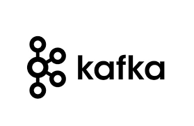
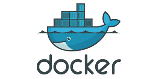

ACME Bank
ACME Bank is a fictitious bank used as the business case for developing a business process platform using modern lightweight enterprise architecture.
Source code
The source code is found under the ACME Bank organization on GitHub.
Architecture
The core platform is centered around an event based architecture with event sourcing and CQRS.
Below are some of the core frameworks and runtime components used in the architecture.

 